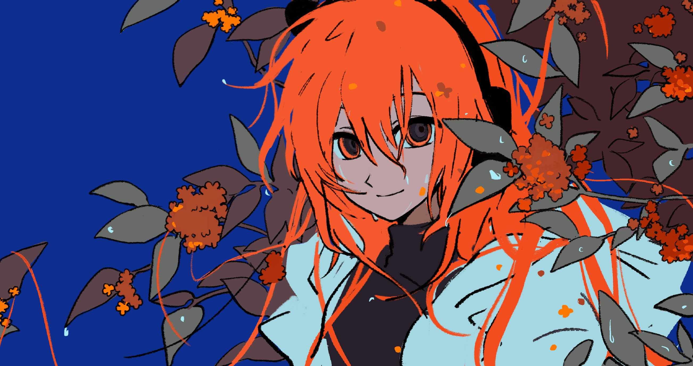

Soy estudiante de Gráfica Interactiva y Diseño Web en la Escuela de Arte de Sevilla. Tengo cierta experiencia en la creación de contenido visual y gráfico. Fuera del campo académico, soy artista digital freelancer y desarrolladora de videojuegos desde el software de RPG Maker. Tengo conocimientos de HTML, CSS y JavaScript. Actualmente, publico mis juegos en la plataforma Itch.io.